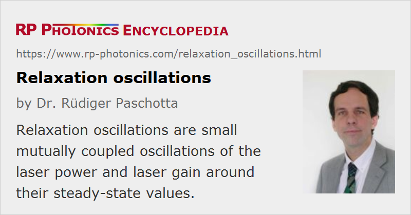

Relaxation Oscillations
Definition: small mutually coupled oscillations of the laser power and laser gain around their steady-state values
German: Relaxationsoszillationen
How to cite the article; suggest additional literature
Author: Dr. Rüdiger Paschotta
When a laser is disturbed during operation, e.g. by fluctuations of the pump power, its output power does not immediately return to its steady state. Many lasers (e.g. solid-state lasers and most laser diodes) operate in the so-called class B regime, with the upper-state lifetime often being much longer than the cavity damping time. In that regime, changes in pump power lead to so-called relaxation oscillations. These are usually damped, eventually leading back to the steady state. Particularly pronounced oscillatory behavior with relatively low oscillation frequencies (often in the kilohertz regime) occurs in doped insulator solid-state lasers, whereas semiconductor lasers normally exhibit strongly damped relaxation oscillations with very high frequencies in the gigahertz region. Other lasers, e.g. many gas lasers, operating in the class A regime with an upper-state lifetime below the cavity damping time, do not exhibit relaxation oscillations, but only an exponential relaxation to the steady state.
As Figure 1 shows, class B lasers can exhibit strong spiking e.g. when the pump power is suddenly turned on. After the emission of a few spikes (pulses), the laser power exhibits damped relaxation oscillations. The oscillation frequency is similar to the inverse period of the spikes.
Calculations of relaxation phenomena can be based on the dynamic equations as presented in the article on laser dynamics, which can (for small fluctuations, not for spiking) be linearized around the steady state. In the following, the main results of such an analysis for class-B lasers are given. The frequency of the relaxation oscillations is determined by the intracavity power Pint, the resonator losses ρ, the round-trip time TR of the resonator, and the saturation energy Esat and the upper-state lifetime τg of the gain medium:
The cavity damping time corresponds to TR / ρ, and the first term in the radicand is larger than the second one in the mentioned class B regime.
For solid-state lasers (with τg >> TR), the second term of the radicand is negligible (except for operation close to threshold), so that the equation simplifies to
The equations are valid for both four-level and three-level gain media. However, only for four-level gain media can the former equation be transformed into
where r is the so-called pump parameter, which is the ratio of pump power to threshold pump power.
The damping time of the oscillations can be calculated from
For operation just above the laser threshold, the relaxation oscillations are slow, and their damping time is about twice the upper-state lifetime of the gain medium. For higher powers, the oscillations can faster, and the damping time gets shorter. For four-level lasers, the damping time is inversely proportional to the pump parameter r.
Note that a saturable absorber in the laser resonator, which may be used for passive mode locking, can strongly reduce the damping [2]; the oscillations can even become undamped, so that the steady state becomes unstable. This leads to the phenomenon of Q-switching instabilities and Q-switched mode locking.
The characterization of the laser dynamics can deliver useful information on the laser parameters such as the resonator losses or the gain saturation energy, thus also the laser cross sections.
Questions and Comments from Users
Here you can submit questions and comments. As far as they get accepted by the author, they will appear above this paragraph together with the author’s answer. The author will decide on acceptance based on certain criteria. Essentially, the issue must be of sufficiently broad interest.
Please do not enter personal data here; we would otherwise delete it soon. (See also our privacy declaration.) If you wish to receive personal feedback or consultancy from the author, please contact him e.g. via e-mail.
By submitting the information, you give your consent to the potential publication of your inputs on our website according to our rules. (If you later retract your consent, we will delete those inputs.) As your inputs are first reviewed by the author, they may be published with some delay.
Bibliography
| [1] | K. J. Weingarten et al., “In situ small-signal gain of solid-state lasers determined from relaxation oscillation frequency measurements”, Opt. Lett. 19 (15), 1140 (1994), doi:10.1364/OL.19.001140 |
| [2] | A. Schlatter et al., “Pulse-energy dynamics of passively mode-locked solid-state lasers above the Q-switching threshold”, J. Opt. Soc. Am. B 21 (8), 1469 (2004), doi:10.1364/JOSAB.21.001469 |
| [3] | A. E. Siegman, Lasers, University Science Books, Mill Valley, CA (1986) |
| [4] | O. Svelto, Principles of Lasers, Plenum Press, New York (1998) |
See also: laser dynamics, spiking, Q-switching instabilities
and other articles in the category lasers

This encyclopedia is authored by Dr. Rüdiger Paschotta, the founder and executive of RP Photonics Consulting GmbH. How about a tailored training course from this distinguished expert at your location? Contact RP Photonics to find out how his technical consulting services (e.g. product designs, problem solving, independent evaluations, training) and software could become very valuable for your business!
|  |
If you like this page, please share the link with your friends and colleagues, e.g. via social media:
These sharing buttons are implemented in a privacy-friendly way!